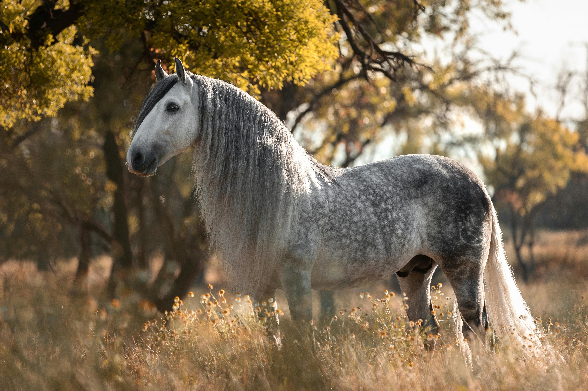
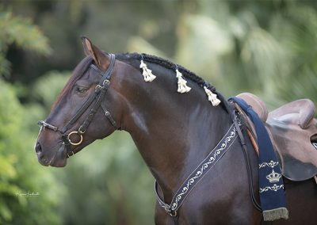
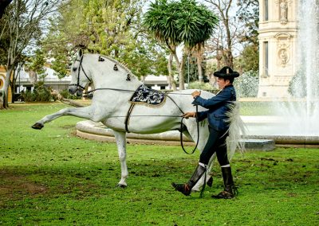

The Andalusian Horse: Heritage in Motion
Renowned for its intelligence, natural balance, and expressive movement, the Andalusian combines beauty with utility — a rare blend that has ensured its survival and relevance from ancient battlefields to modern dressage arenas.

Origins: A Legacy Carved into the Iberian Soil
The Andalusian's ancestry reaches back over 2,000 years. Indigenous Iberian horses were shaped over time by multiple cultures, from the Romans to the Visigoths, and most significantly, by the Moors during their 800-year presence on the Iberian Peninsula. The infusion of Barb and Arabian bloodlines introduced refinement, stamina, and agility to the existing stock.
By the late Middle Ages, the Andalusian had emerged as a distinct type — strong yet graceful, courageous yet tractable. Spanish monasteries and royal stables selectively bred these horses for classical riding and cavalry, valuing their athleticism and ability to perform complex maneuvers.
Their popularity spread rapidly throughout Europe. They were highly sought after by kings, military leaders, and horsemasters in France, Austria, and Italy, and they played a foundational role in the development of other European breeds such as the Lipizzaner, Lusitano, and even some American breeds introduced during colonization.
Characteristics and Conformation
The modern Andalusian retains many of the traits that made it so valuable centuries ago. It typically stands between 15.1 and 16.2 hands, with a strong, compact body, arched neck, broad chest, and sloping croup. Most Andalusians are grey, although bay and black are also recognized.
What truly distinguishes the breed is its natural ability for collection — the capacity to carry more weight on the hindquarters, lift the forehand, and execute elevated movements with apparent ease. This makes the Andalusian especially well-suited for classical dressage, high school movements, and performance arts such as doma vaquera and mounted bullfighting (rejoneo).
The breed is also known for its intelligent and willing temperament, making it both trainable and highly responsive to subtle aids.

Cultural Significance and Modern Use
The Andalusian horse remains deeply embedded in the identity of southern Spain. In Andalusia, horses are not just animals — they are part of family history, regional pride, and annual celebration. Events such as the Feria de Abril in Seville or the Romería del Rocío in Huelva showcase Andalusians in full regalia, with riders dressed in traje corto or flamenco-inspired attire, riding through town squares and pilgrimage routes with music and ceremony.
At the Royal Andalusian School of Equestrian Art in Jerez de la Frontera, the breed is at the center of elite performance, where riders and horses demonstrate classical movements like the piaffe, passage, and airs above the ground with absolute harmony.
Internationally, the Andalusian is increasingly recognized in competitive dressage, working equitation, driving, film, and liberty work. Its versatility makes it a favorite among riders seeking a horse with presence, heart, and historical depth.

Tack and Riding Traditions
The Andalusian is traditionally ridden in Spanish vaquero tack, designed for both form and function. The silla vaquera (vaquero saddle) is wide and flat with thick wool or sheepskin padding, allowing for comfortable, all-day riding during cattle work.
The bridle often includes a serreta — a metal or rawhide noseband — used for fine control, although today many riders opt for milder equipment depending on training methods. Reins are typically ridden one-handed, in line with working traditions, and the seat is deep but mobile, encouraging close contact and clear communication.
In classical exhibitions and festivals, Andalusians are adorned in ornate gear, including silver-accented bridles, embroidered breast collars, and saddle blankets with regional embroidery. These traditions reflect not only pride in horsemanship but also the breed’s place in Spanish culture as a living symbol of elegance and endurance.
A Living Link Between Past and Present
The Andalusian is more than a historical artifact or a performer in a show ring. It is a breed that continues to bridge centuries of equestrian tradition — from warhorse and royal mount to modern dressage partner and cultural ambassador.
Its presence in the Andalusian landscape feels both timeless and immediate. Whether moving through an olive grove or under the bright lights of an arena, the Andalusian still carries itself with the same pride that once earned the admiration of empires.
Related Stories
.jpg)
The Side Saddle: An Evolution Shaped by Constraint, Craft, and Culture
The side saddle was not a decorative tradition but a technical response to social constraint. This article traces its evolution from medieval Europe to its peak in British hunting.

The Horses of the Camargue
Tough, white, and semi-feral, the Camargue horse is a living part of southern France's wetland culture. This article explores the breed's origins, traits, and working life with the Gardians.